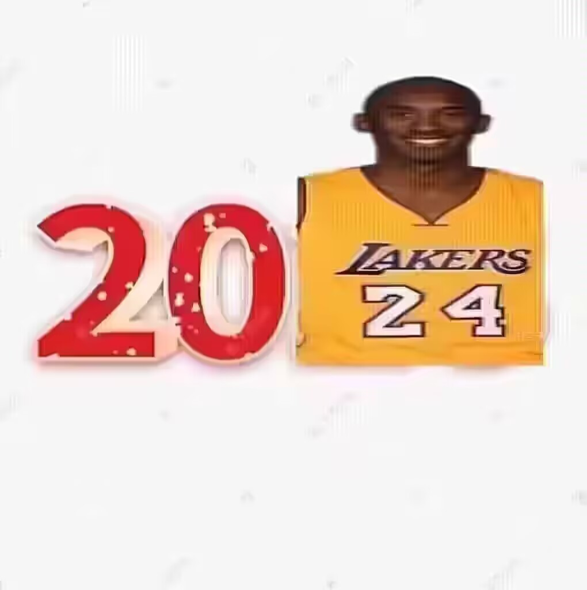
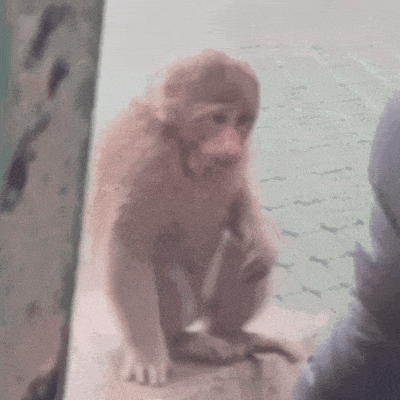
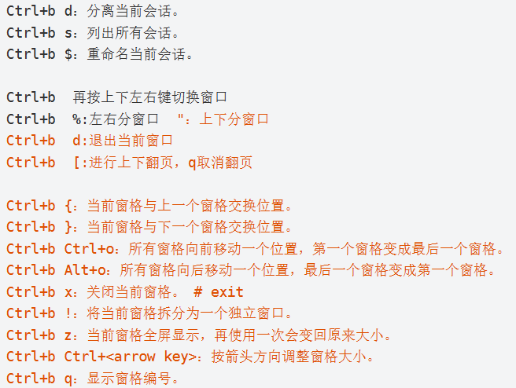

白白
矮油!2024年想不想学新的知识呢！

明明
学完我就可以像科比一样强吗！
白白
你把整本书都学会了或许才能比得上他
明明
那么要学什么呢，快开始吧！
白白
好的，失败的man，咱学学办公常用到的tmux。
tmux是一个终端复用器（terminal multiplexer）,当tmux在工作中,即时关掉Secure CRT的连接窗口，再次连接，进入tmux的会话我们仍可以继续工作。
会话与进程
命令行的典型使用方法是，打开一个终端窗口(terminal window,以下简称"窗口")，在里面输入命令。用户与计算机的这种临时交互，称为一次"会话"(session)。
会话的一个重要特点是，窗口与其中启动的进程是连在一起的。打开窗口，会话开始；关闭窗口，会话结束，会话内部的进程也会随之终止，不管有没有运行完.
命令行的典型使用方法是，打开一个终端窗口(terminal window,以下简称"窗口")，在里面输入命令。用户与计算机的这种临时交互，称为一次"会话"(session)。
会话的一个重要特点是，窗口与其中启动的进程是连在一起的。打开窗口，会话开始；关闭窗口，会话结束，会话内部的进程也会随之终止，不管有没有运行完.
明明
了解~
白白
如何安装tmux？cmd
Click for details
cmd
{{ item.content }}
{{ item.content }}
启动和退出tmux
输入tmux命令，会进入tmux窗口
按下ctrl+b或者输入exit命令，就可以退出tmux窗口(会话结束)
输入tmux命令，会进入tmux窗口
按下ctrl+b或者输入exit命令，就可以退出tmux窗口(会话结束)
tmux快捷键的使用
tmux窗口有大量的快捷键.所有快捷键都要通过前缀键唤起.默认前缀键是Ctrl+b,即先按下Ctrl+b快捷键才会生效
tmux窗口有大量的快捷键.所有快捷键都要通过前缀键唤起.默认前缀键是Ctrl+b,即先按下Ctrl+b快捷键才会生效
明明
看上去不难啊，都想试试了
.jpg)
白白
一听就会，一做就废。建议你吃点这个。
 下面讲讲使用
下面讲讲使用
创建会话
启动tmux窗口,编号是0,第二个窗口的编号是1,以此类推
tmux
指定名称创建会话
tmux new -s < session-name >
启动tmux窗口,编号是0,第二个窗口的编号是1,以此类推
tmux
指定名称创建会话
tmux new -s < session-name >
退出当前会话
在 tmux 窗口中，按下Ctrl+b d或者输入：tmux detach命令，就会将当前会话窗退出
tmux detach
上面命令执行后，就会退出当前 tmux 窗口，但是会话和里面的进程仍然在后台运行。
tmux ls命令可以查看当前所有的 tmux 会话。
tmux ls
# or
tmux list-session
在 tmux 窗口中，按下Ctrl+b d或者输入：tmux detach命令，就会将当前会话窗退出
tmux detach
上面命令执行后，就会退出当前 tmux 窗口，但是会话和里面的进程仍然在后台运行。
tmux ls命令可以查看当前所有的 tmux 会话。
tmux ls
# or
tmux list-session
进入tmux会话
tmux attach命令用于重新接入某个已存在的会话。
# 使用会话编号
tmux attach -t 0 # 0 是会话名称
#or
tmux a -t 0
# 使用会话名称
tmux attach -t < session-name >
tmux attach命令用于重新接入某个已存在的会话。
# 使用会话编号
tmux attach -t 0 # 0 是会话名称
#or
tmux a -t 0
# 使用会话名称
tmux attach -t < session-name >
明明
那怎么关闭会话呢？用kill吗？

白白
哎哟不错，有这种思维意识了，的确要用到kill，下面细说。
在tmux中，删除（关闭）一个会话（session）通常意味着结束该会话。这可以通过几种方式实现：
1. 在会话内部关闭
如果你当前在一个tmux会话中，可以通过以下步骤来关闭它：
按下 Ctrl + B（这是tmux的默认前缀键），然后按下 & 键。
tmux会询问你是否真的要关闭这个窗口。确认后，会话将被关闭。
1. 在会话内部关闭
如果你当前在一个tmux会话中，可以通过以下步骤来关闭它：
按下 Ctrl + B（这是tmux的默认前缀键），然后按下 & 键。
tmux会询问你是否真的要关闭这个窗口。确认后，会话将被关闭。
2. 从另一个会话关闭
如果你想从另一个tmux会话或者普通终端关闭一个tmux会话，可以使用以下命令：
tmux kill-session -t session-name
其中 session-name 是你想关闭的会话名称。如果你不知道会话名称，可以先用 tmux list-sessions 来列出所有会话。
如果你想从另一个tmux会话或者普通终端关闭一个tmux会话，可以使用以下命令：
tmux kill-session -t session-name
其中 session-name 是你想关闭的会话名称。如果你不知道会话名称，可以先用 tmux list-sessions 来列出所有会话。
3. 关闭所有会话
如果你想关闭所有tmux会话，可以使用：
tmux kill-server
这个命令会关闭tmux服务器，从而关闭所有会话。注意，这个命令将不会有确认提示，所有会话将立即关闭。
如果你想关闭所有tmux会话，可以使用：
tmux kill-server
这个命令会关闭tmux服务器，从而关闭所有会话。注意，这个命令将不会有确认提示，所有会话将立即关闭。
白白
但是！！！
明明
但是什么？！！
白白
但是！！！你先要确保你关闭的是啥！在tmux中，会话（session）、窗口（window）和面板（pane）是三个不同的概念。确保你要关闭的是会话，而不是窗口或面板。
如果你不确定，总是可以先用 tmux list-sessions 查看现有会话，再进行关闭操作。
明明
学到啦！

白白
切换会话tmux switch命令用于切换会话
# 使用会话编号
tmux switch -t 0
# 使用会话名称
tmux switch -t < session-name >
重命名会话
tmux rename-session命令用于重命名会话
把0号重命名
tmux rename-session -t 0 < new-name >
tmux rename-session命令用于重命名会话
把0号重命名
tmux rename-session -t 0 < new-name >
明明

白白
但是！！！
明明
又咋了！？
白白
没事，吓你一下。嘻嘻讲完了。
明明
.jpg)
白白
最后再给你一些常用的快捷键

记得好好学，孔子曰：学而不思则...
明明
我知道我知道！！
白白
...老子曰：孔子说滴对！